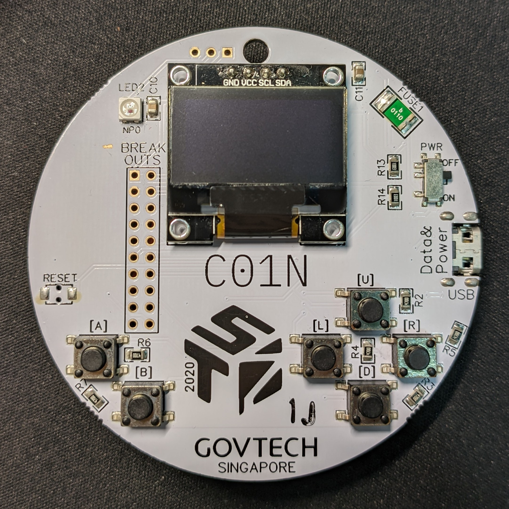
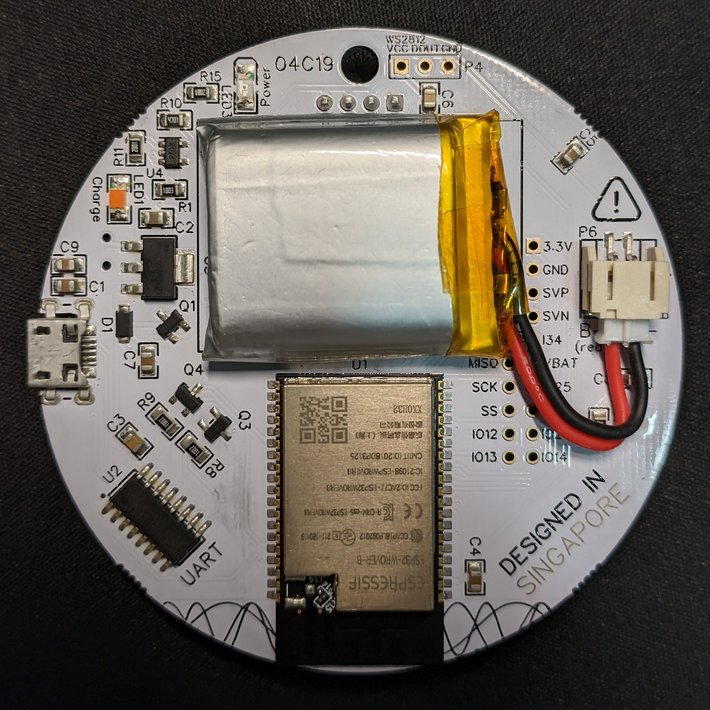

About
Shokudou is a website that shows you the number of people in the canteen at any time, before you leave your homeroom.
We use TraceTogether signals to detect the number of people in the canted in real-time, through Bluetooth-enabled scanners scattered around the canteen.
Artifical intelligence allows us to find the number of people in each queue to a high accuracy, enabling you to make more informed choices.
Historical data is made available so that you can plan out when best to go for lunch, using intiutive and regularly updated graphs.
Our project is open source. Brought to you by @sheepymeh and @meeps123 of IRS.
These are our scanners, please do not remove them.  